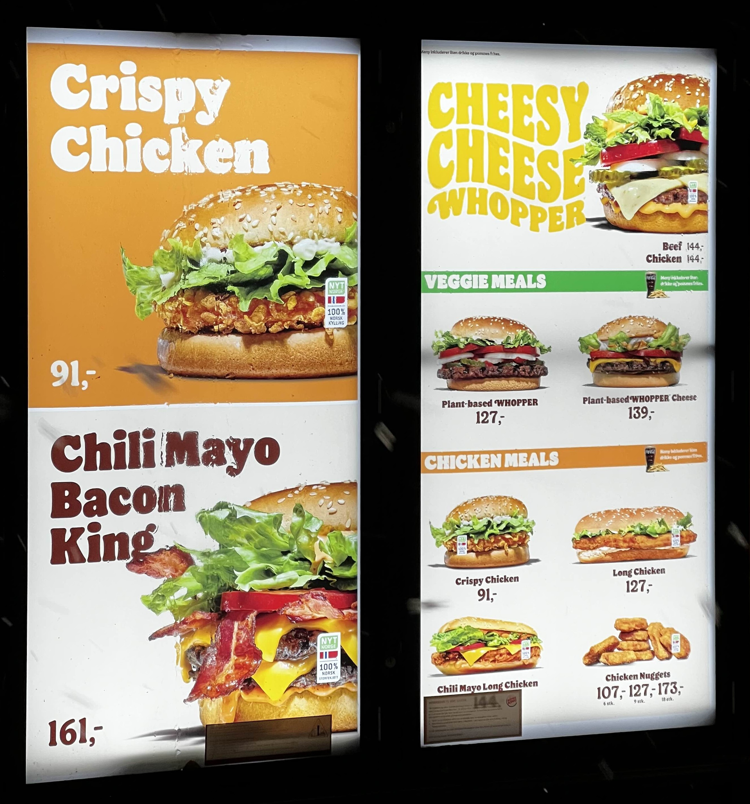
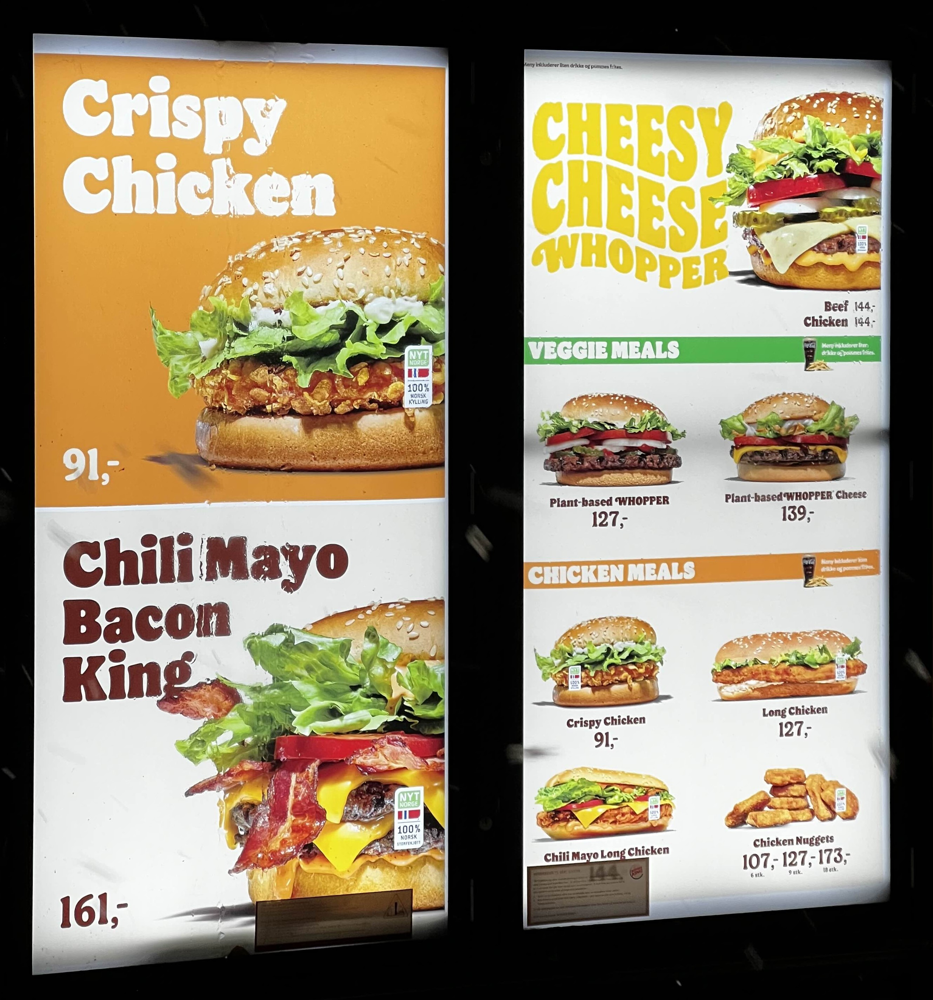

Er norsk mat i fare? Kan norsk matkultur reddes?
Publisert: 21. november 2024

Norge, med sine fjorder, fjell og rik historie, har en matkultur like mangfoldig som landskapet selv. Fra tradisjonelle retter som fårikål og kjøttkaker til nyere impulser fra det globale kjøkkenet, er nordmenns spisevaner i stadig endring. Men i møte med internasjonale trender og raske måltidsløsninger, hva skjer egentlig med de tradisjonelle norske rettene?
"Norsk mat suger." - Anonym ekspert
En undersøkelse fra Statistisk sentralbyrå viser at stadig færre nordmenn lager tradisjonsmat jevnlig, mens retter som sushi, kebab og street food har funnet sin plass i hverdagen. Det som en gang ble servert på norske middagsbord handlet om tradisjon og lokale ingredienser, men nå former globalisering og reiselyst stadig mer hva nordmenn setter på tallerkenen. Et sted på veien gikk poteten og kålen fra å være ukens hovedingredienser til noe vi bare møter i bestemor sitt kjøkken. Nylig viste en studie at bare 23 % av nordmenn tilbereder norske tradisjonsretter jevnlig, mens asiatisk mat, med sushi i spissen, har funnet sin vei inn på 56 % av norske kjøkken minst én gang i måneden. Hvordan skjedde denne overgangen fra fårikål til fisk på ris, og kan vi bevare det norske i møtet med nye smaker? Tid og praktikalitet kan være noen av de viktigste årsakene til at klassiske norske retter, som fårikål og kjøttkaker, gradvis forsvinner fra hverdagsmenyen. Tora Lien, forsker ved SIFO, påpeker at den moderne matlagingen i dag handler om hurtighet og tilgjengelighet: “Det krever både kunnskap og tålmodighet å lage tradisjonsmat, og mange ser ikke nødvendigvis på disse rettene som like praktiske i en hektisk hverdag.” Selv om det norske kjøkkenet nå er et smakfullt fusjonspunkt av gamle tradisjoner og nye matvaner, er det mange som ønsker å holde fast ved det norske. Med initiativer som "Fårikålens dag" og et økt fokus på bærekraftige valg, ser fremtiden lys ut for norsk matkultur, både på nostalgiske og moderne måter. Mat er mer enn bare næring – det er en del av vår identitet og historie. Tradisjonelle retter representerer århundrer med kunnskap, lokal tilpasning og kulturarv. I en tid hvor matkulturen preges av raske trender, er det viktig å reflektere over hvordan vi kan bevare essensen av det norske kjøkkenet.


Hovedpunkter i saken
- Norsk mat suger.
- Eksperter har kommentert.
- Publikum reagerer.
- Fremtiden er fortsatt usikker.
Man finner knapt en restaurant som serverer norsk tradisjonsmat, bortsett fra enkelte nisjesteder. Nærmeste resturant som serverer norsk tradisjonsmat i Halden, er en resturant som ligger på grensa til sverige. I hjertet av norsk matkultur ligger retter som fårikål, kjøttkaker og lapskaus. Men i dagens hektiske hverdag taper disse rettene stadig terreng. Bare 23 % av nordmenn lager tradisjonsmat jevnlig, og blant de unge er andelen enda lavere. Samtidig har internasjonal mat som sushi, kebab og taco blitt en naturlig del av nordmenns kosthold. Mat er mer enn bare næring – den forteller historien om hvem vi er. Tradisjonsretter er en bærer av lokal kultur, samhold og minner. I en tid hvor hurtigmat og globalisering dominerer, står vi overfor et viktig spørsmål: Hvordan kan vi balansere stoltheten over våre mattradisjoner med åpenheten for nye smaker?
 

Hva serveres i norge?
Insert tekst her :P


Hva er fremtiden for norsk mat?
Flere kokker og matentusiaster mener at tradisjonsmaten kan moderniseres. Dette handler om å gjøre rettene mer tilgjengelige og tilpasset moderne smaker.En lapskaus trenger ikke smake akkurat som før. Med nye krydder og råvarer kan vi bringe liv til gamle oppskrifter.Dette har også blitt gjort i andre land. Italia har klart å gjøre sine tradisjonelle retter til globalt elskede ikoner, samtidig som de har beholdt lokal stolthet. Kan Norge gjøre det samme? Matentusiaster og kokker mener likevel at Norge kan bevare tradisjonsmaten, samtidig som vi utforsker nye smaker. “Det handler om å skape balanse,” sier kokk Kari Rønningen. “Norske retter har en kulturell verdi, men det betyr ikke at vi må forkaste de nye innflytelsene. En lapskaus kan tilsettes nye krydder og fortsatt være tro mot sin opprinnelse.” Et blikk på restaurantlandskapet bekrefter trenden: Fastfood-kjeder som tilbyr internasjonale retter opplever en årlig vekst på 12 %, mens restauranter som serverer norsk mat har hatt en nedgang i omsetning på 8 % de siste fem årene, ifølge tall fra NHO Reiseliv. Restauranter speiler ofte forbrukernes smakspreferanser. I de siste tiårene har internasjonale fastfood-kjeder hatt en årlig vekst på 12 %, mens restauranter som spesialiserer seg på norsk mat har opplevd en nedgang på 8 % i omsetning, ifølge tall fra NHO Reiseliv. Men de siste tiårene har det skjedd en dramatisk endring. Globalisering og økt tilgang på internasjonale råvarer har åpnet for nye impulser. I dag er tid kanskje vår mest dyrebare ressurs. Hurtigmat og ferdigretter har blitt løsningen for mange. Tradisjonelle retter, som ofte krever flere timers tilberedning, oppleves som upraktiske i en hektisk hverdag. (Bildet av ferdig retter på butikken)Mange ser ikke verdien i å bruke tid på noe som ikke umiddelbart virker praktisk eller enkelt.For yngre generasjoner er det også en kulturell distanse til tradisjonsrettene. En undersøkelse viser at 70 % av nordmenn under 30 år oppgir at de aldri har laget fårikål fra bunnen av. Samtidig tiltrekkes de av raskere og mer globale alternativer som sushi og taco.

Avsluttning
Insert avsluttning her :P